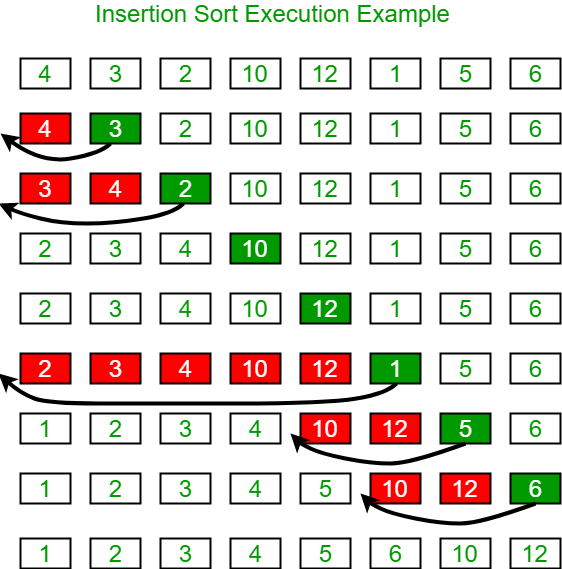

Sortowanie przez wstawianie
Opis algorytmu
Algorytm sortowania przez wstawianie, podczas iteracji wstawia każdy element na jego właściwą pozycję. Przy każdej iteracji element jest porównywany ze wcześniejszymi elementami, aż do znalezienia prawidłowej pozycji, następnie elementy po lewej stronie są przesuwane, aby zrobić miejsce dla nowego elementu.
